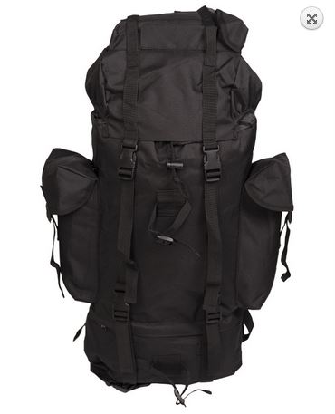
Rucsac German Negru Import Large
160 Lei
Cod produs: G001
Descriere Produs:
100% Polyester, Polyvinylchlorid coated
Dimensions: 31 x 17 x 56 cm
Total volume: ca. 35 liter
- an inexpensive variation of the original german battle backpack
- big main pocket with separated inner pocket for the insulating underlay
- top with zipper pocket and patch pocket with buckle
- 2 pockets on the side
- upholstered shoulder straps
- separated bottom pocket
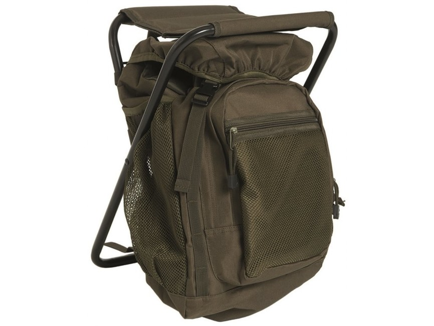
Rucsac Oliv cu Scaun Integrat
145 Lei
Cod produs: G002
Descriere Produs:
Material:100% poliester Dimensiuni: 42 x 25 x 14 cm (pliat)
Capacitate: aproximativ 38 litri Greutate: 1120 g
Rucsac cu scaun integrat
Cadru de aluminiu
Scaun durabil
Compartiment principal mare
Buzunar frontal cu suplimentare
Ochiurile buzunarelor sunt din plasa
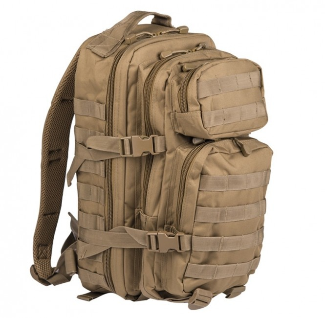
Rucsac US Assault Mare Coyote
190 Lei
Cod produs: G003
Descriere Produs:
100% Polyester
Volum: ca. 36 Liter
Dimensiuni: 51 x 29 x 28 cm
Greutate: ca. 1600 gDescriere:
-spate captusit
-bretele matlasate umar, proiectate ergonomic , reglabile
-bucle pentru ataşarea materialului suplimentar
- 2 compartimente mari cu fermoar şi buzunare din plasa diverse
- 1 buzunar frontal cu fermoar buzunar organizator şi suplimentare
- control de volum şi de fixare a bagajelor, cu curele de compresie laterale
- diverse puncte de fixare
- maner
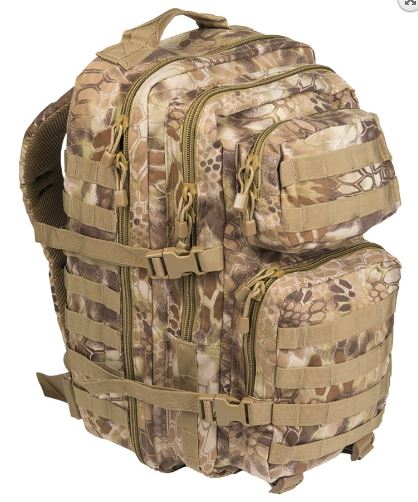
Rucsac US Assault LG Mandra
185 Lei
Cod produs: G004
Descriere Produs:
Material exterior: 100% Poliester, acoperit cu Polyvinylchlorid
Captuseala: 100% Polyester
Intaritura: Spuma EVA (260 respectiv 550 g/m2)
Capacitate: circa 36 litri
Dimensiuni: 51 x 29 x 28 cm
Greutate: 1.450 g
- Intaritura pe spate
- bretele captusite cu forma ergonomica, late de circa 5 cm, reglabile in lungime
- Ochiuri pentru fixare suplimentară
- Curea de talie reglabilă cu eliberare rapidă
- Mâner de transport
- 2 compartimente mari cu diferite fermoare și compartimente cu plasa
- Buzunar frontal cu organizator și compartiment suplimentar cu fermoar
- Toate compartimentele cu fermoar cu 2 căi
- Controlul volumului și fixarea bagajelor cu curele laterale de compresie
- diverse puncte Molle de prindere
- Buzunar Velcro integrat pentru Hydropack
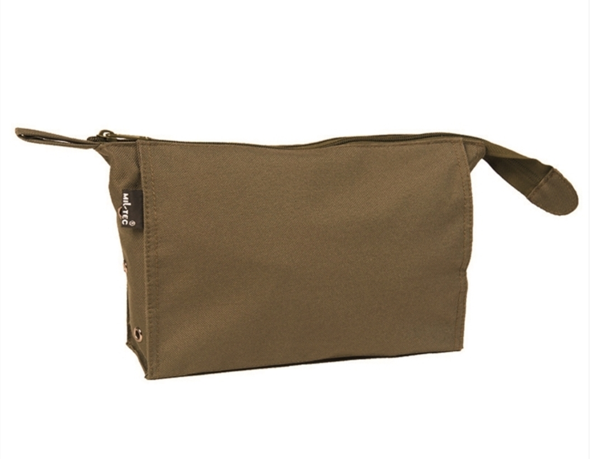
German Coyote Toilet Bag
35 Lei
Cod produs: G005
Descriere Produs:
Upper: 100% Polyester, Polyvinylchloride coated
Lining: 100% Polyester, Polyurethane coated
Dimensions: 24 x 16 x 7 cm
Weight: 90 g
- inside several small pockets
- ventilation holes on the side
- zipper
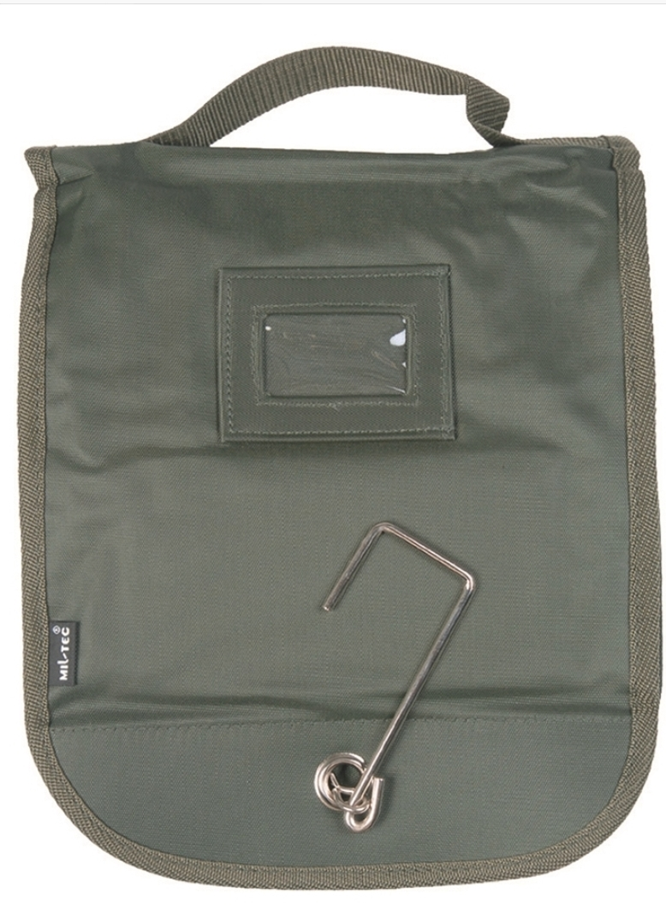
OD Cosmetic Organizer cu Oglinda
50 Lei
Cod produs: G006
Descriere Produs:
100% Polyester
Dimensions: 30 x 25 x 10 cm
Weight: 560 g
- toilet bag to hang up with a lot space for different objects
- big back pocket e.g. for a towel
- with plastic mirror, hang up hook, carrying handle
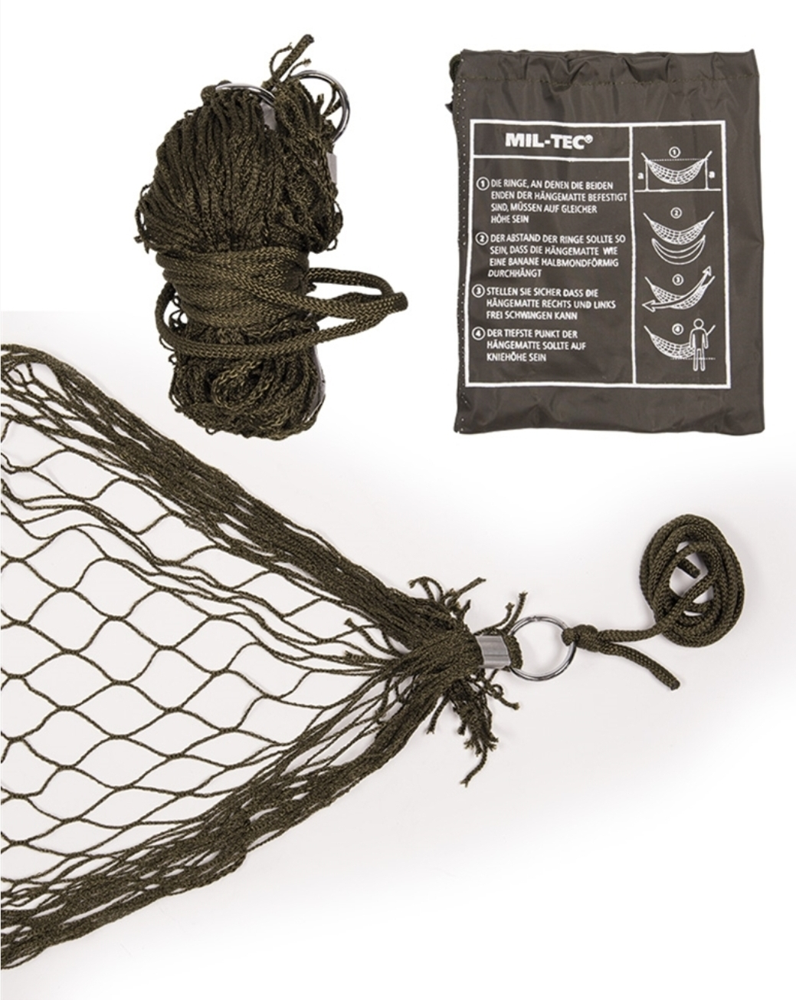
OD Mini Hammock with Transport Bag
85 Lei
Cod produs: G007
Descriere Produs:
100% Nylon
Transportation sack: 100% Polyester
Weight: 250 g
Maximum weight capacity: 120 kg
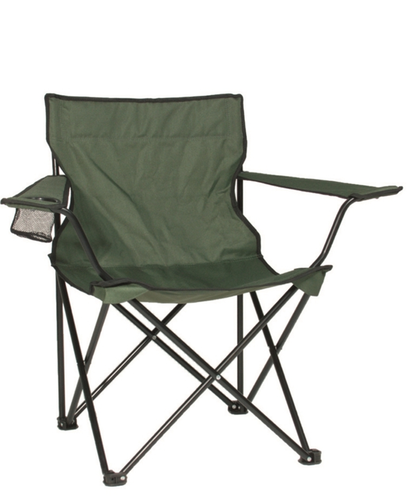
OD Scaun Relaxare
? Lei
Cod produs: G008
Descriere Produs:
100% Polyester (Oxford)
Frame: Steel
Transportation bag: 100% Polyester (Oxford)
Dimensions: 90 x 52 x 82 cm
Pack size: 89 x 13 x 12 cm
Weight: 2600 g
Load-bearing capacity: max.100 kg
- armrest with beverage holder
- delivery with transportation bag
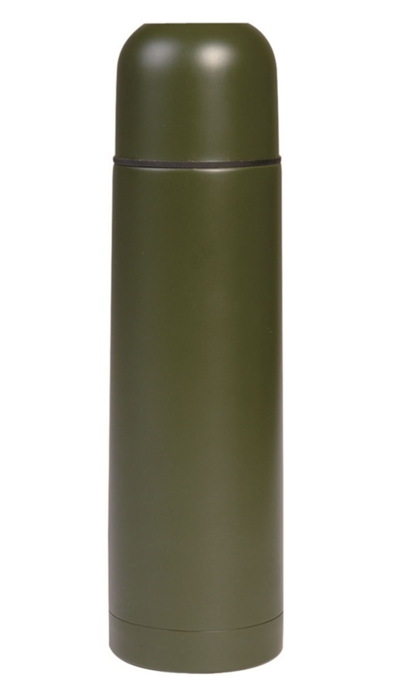
Recipient Thermo 0.5L
? Lei
Cod produs: G009
Descriere Produs:
High-grade steel vakuum thermo bottle.
Total volume: 0,5 liter
Weight: 310 g
Height: 32 cm
Diameter: 8 cm
- unbreakable thermo bottle with flat outside
- drinking cup as sealable cap
- screw cap with pouring spout
- wide opening for cleaning
- for hot and cold drinks
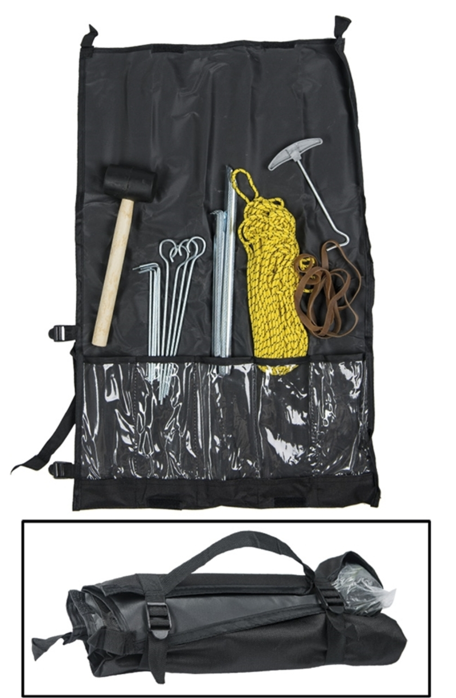
Set Cort
? Lei
Cod produs: G010
Descriere Produs:
Case: 100% Polyester
Pack size: 32 x 10 x 11,5 cm
Weight: 1.000 g
Tent set contains:
1 rubber hammer with wooden handle
1 tent peg puller
6 elastic bands
4 tent pegs (17 cm)
4 tent pegs (21,5 cm)
4 tent pegs (23 cm)
4 tent pegs (30,5 cm)
1 rope (20 m)
- foldable case for a small pack size
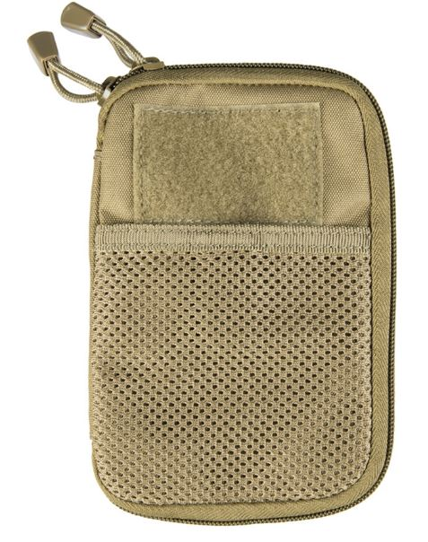
Borseta Militara Coyote
50 Lei
Cod produs: G011
Descriere Produs:
100% Polyester
Upholstery: EVA foam
Transparent file: 100% Polyvinylchloride
- big netting outside-pocket with hook and loop closure
- Molle-loop-system
- big hook and loop closure area to fix patches
- inside wide elastic ribbon for pens
- 3 inside pockets
- convertible transparent file for papers or I.D. by hook and loop closure
- cord with small plastic karabiner
- ribbon with small plastic karabiner
- back part of pouch is upholstered
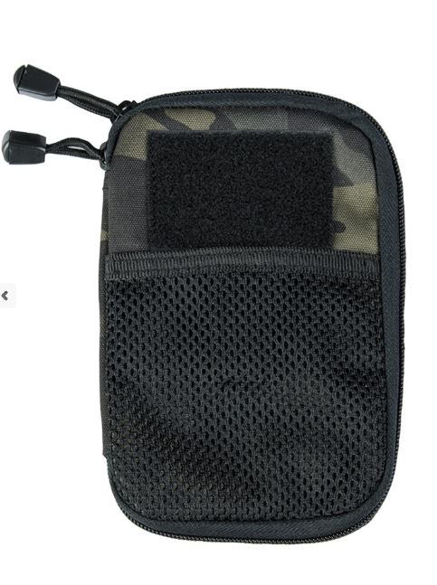
Borseta Militara Multitarn Neagra
40 Lei
Cod produs: G012
Descriere Produs:
100% Polyester
Upholstery: EVA foam
Transparent file: 100% Polyvinylchloride
- big netting outside-pocket with hook and loop closure
- Molle-loop-system
- big hook and loop closure area to fix patches
- inside wide elastic ribbon for pens
- 3 inside pockets
- convertible transparent file for papers or I.D. by hook and loop closure
- cord with small plastic karabiner
- ribbon with small plastic karabiner
- back part of pouch is upholstered
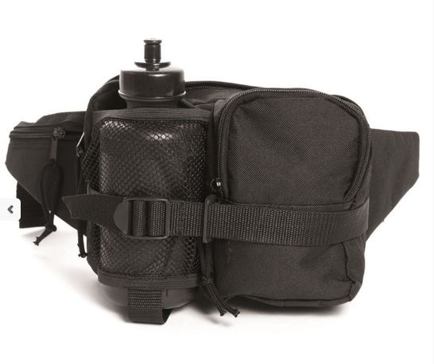
Borseta Neagra pentru Talie cu Recipient
60 Lei
Cod produs: G013
Descriere Produs:
100% Polyester, Polyvinylchlorid coated
Plastic bottle (1 liter)
- big main pocket
- pocket on the side with zipper
- including sports bottle
- adjustable strap in length
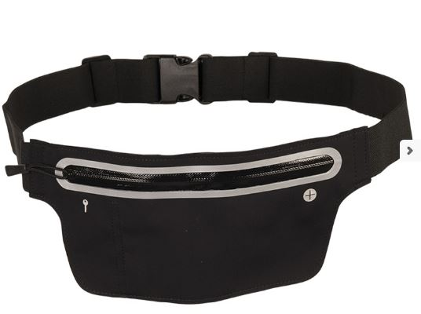
Borseta Neagra Pentru Talie din Lycra
35 Lei
Cod produs: G014
Descriere Produs:
50% Polyester, 40% Polyamide, 10% Elastane (Lycra®)
Dimensions pouch: 24 x 12 cm
Width belt: ca. 4,2 cm
Weight: ca. 80 g
- discreetly, thin waist pouch
- space for all important documents or also a mobile phone
- separate key case
- headset output
- elastic, adjustable, wide belt with quick release buckle
- pracitcally invisible under clothes by flat shape of waist pouch
- reflector stripes
- rainproof material
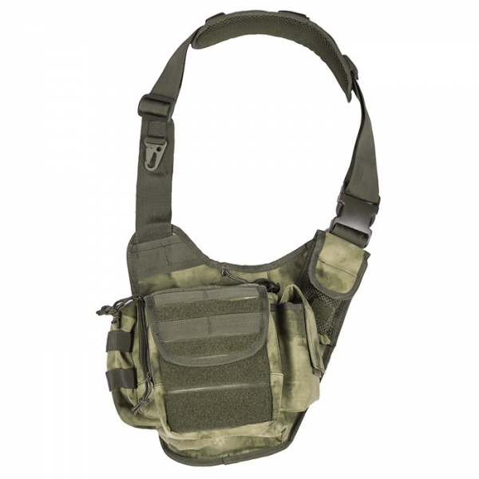
Gentuta Multifunctionala de Umar
140 Lei
Cod produs: G015
Descriere Produs:
-material 100% poliester
-curea de umar ajustabila captusita (5.5cm)
-3 buzunare exterioare cu fermoar
-Buzunar telefon mobil cu plasa
-Compartiment cu fermoar mare cu buzunar interior
-Fixarea pe centura cu buzunar Velcro
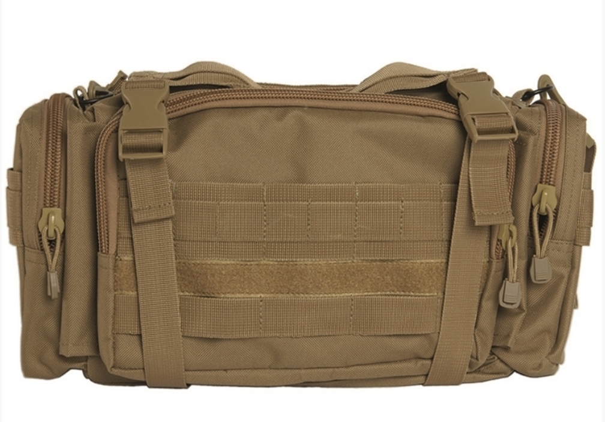
Coyote Fanny Pack Modular System Lrg
? Lei
Cod produs: G016
Descriere Produs:
100% Polyester
Dimensions: 37 x 20 x 8cm
- practical belt pouch with big main pocket and 3 patch pockets with zipper
- main pocket with small integrated put-in-pocket
- modular loops to fix additional pieces of equipment
- wide abdominal belt with quick fastener
- carry handle
si marimi mai mici
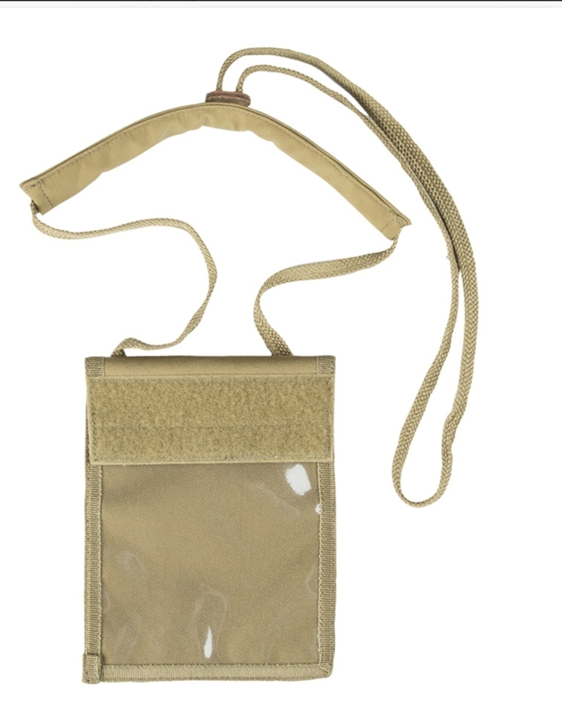
Portofel pentru Gat Coyote
25 Lei
Cod produs: G017
Descriere Produs:
100% Polyester
Ribbon: 100% Polypropylene
Cord stopper: 100% Cowhide
Transparent file: 100% Polyvinylchloride
- main pockets with hook and loop closure
- big transparent file for paper or I.D. on front
- wide hook and loop closure stripe to fix name patch
- 2 files on backside, one with hook and loop closure
- adjustable ribbon with cord stopper
- additional soft fabric ribbon on neck area for more wearing comfort
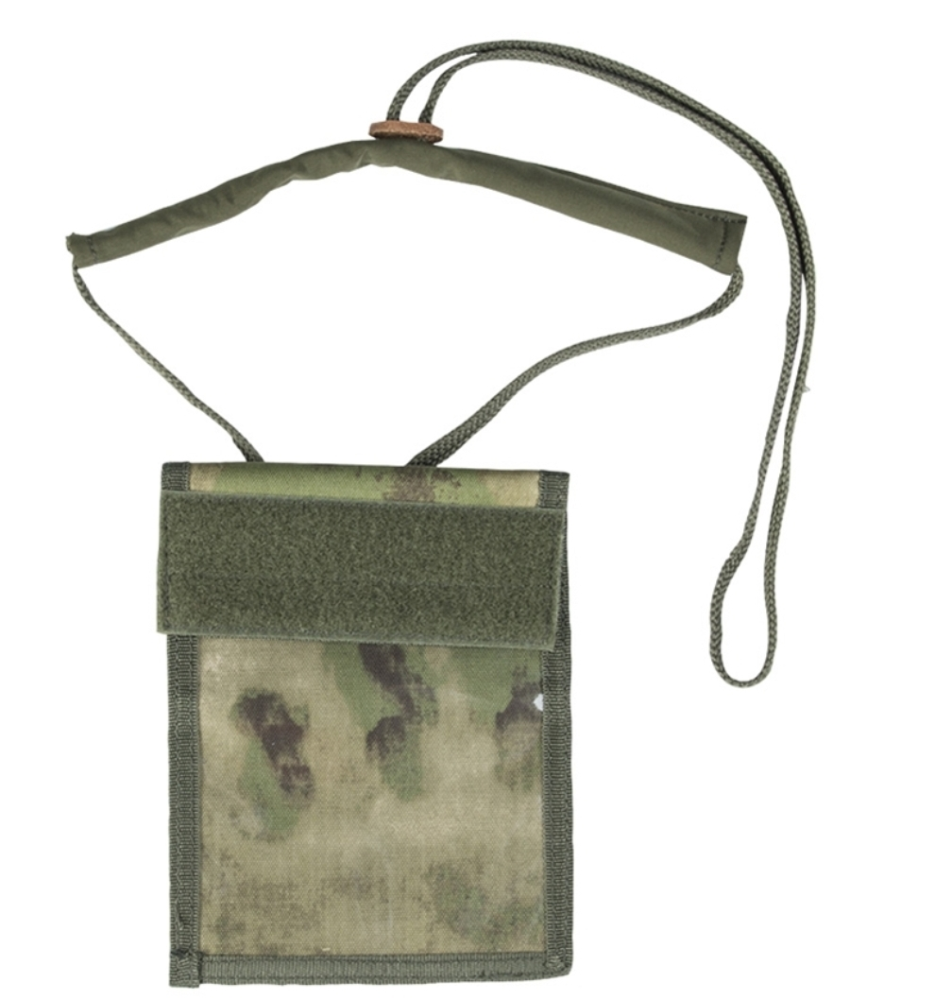
Portofel pentru Gat Coyote
25 Lei
Cod produs: G018
Descriere Produs:
100% Polyester
Ribbon: 100% Polypropylene
Cord stopper: 100% Cowhide
Transparent file: 100% Polyvinylchloride
- main pockets with hook and loop closure
- big transparent file for paper or I.D. on front
- wide hook and loop closure stripe to fix name patch
- 2 files on backside, one with hook and loop closure
- adjustable ribbon with cord stopper
- additional soft fabric ribbon on neck area for more wearing comfort
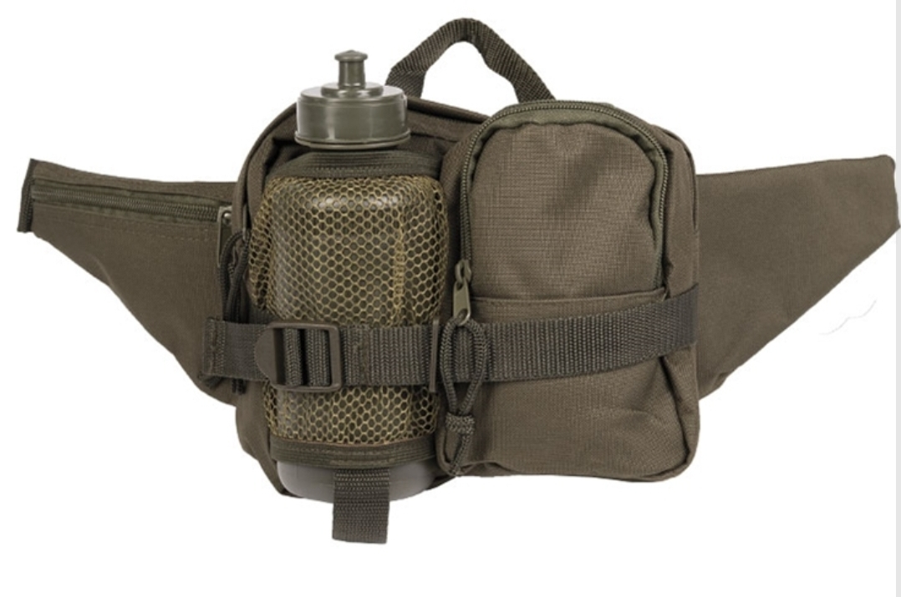
OD Fanny Pack with Botttle
? Lei
Cod produs: G019
Descriere Produs:
100% Polyester, Polyvinylchlorid coated
Plastic bottle (1 liter)
- big main pocket
- pocket on the side with zipper
- including sports bottle
- adjustable strap in length
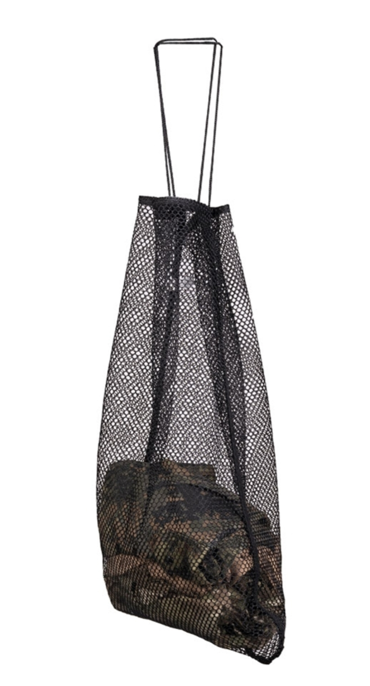
Sac Rufe German Negru
? Lei
Cod produs: G020
Descriere Produs:
100% Polyester
Dimensions: 50 x 75 cm